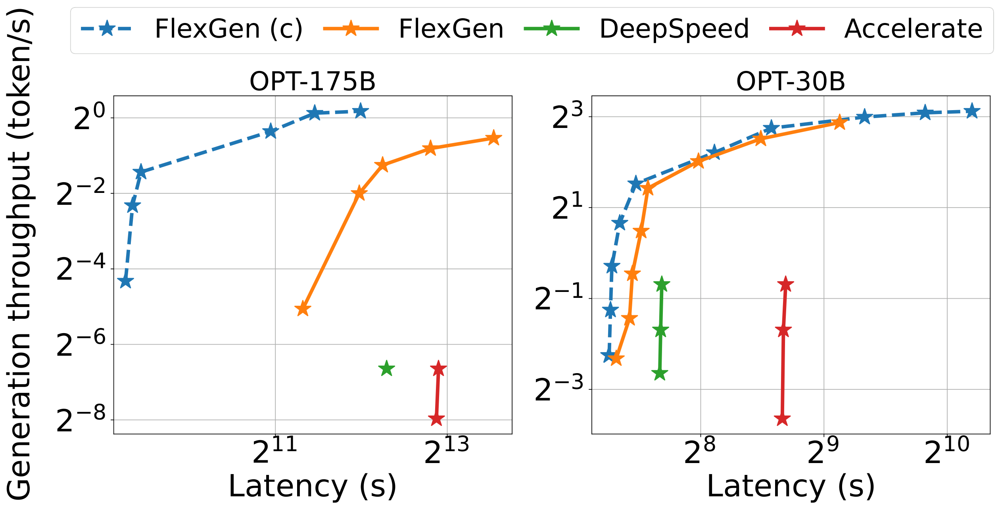
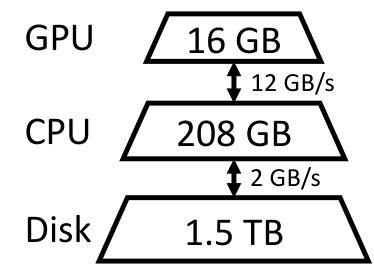
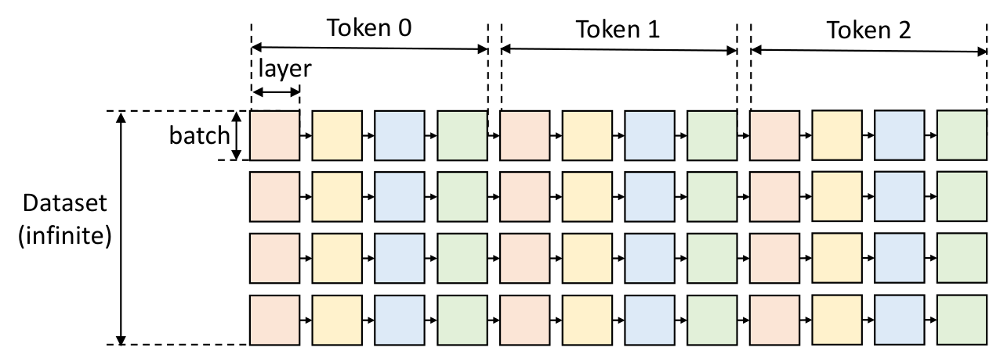
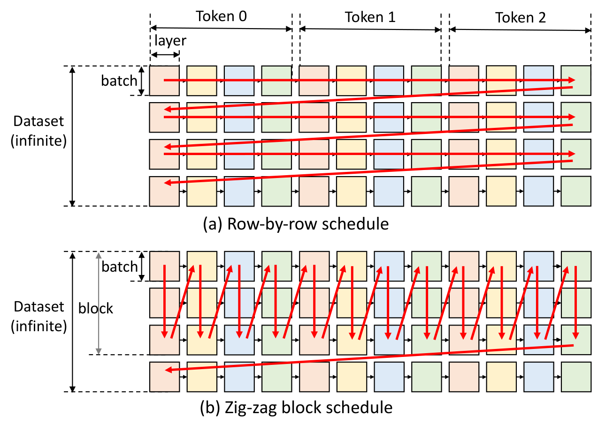
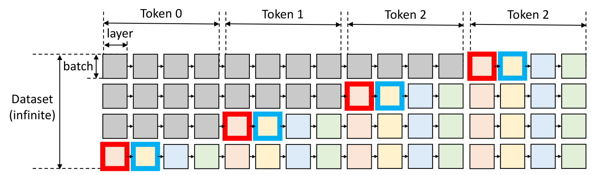
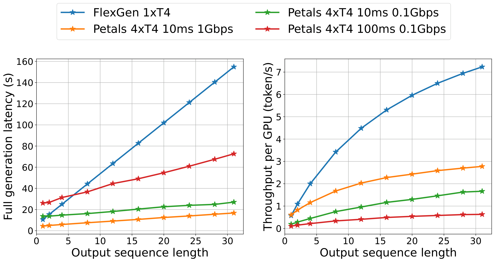

FlexGen：单 GPU 上的大语言模型高吞吐生成式推理
中文全文翻译
摘要
FlexGen 面向延迟不敏感的批量任务，在有限 GPU 内存下实现高吞吐 LLM 生成。它聚合 GPU、CPU 与磁盘的容量和计算能力，用线性规划搜索权重、激活和 KV cache 的存储与访问方案，并把权重和 attention cache 压缩到 4 bit。由此扩大可选 batch size，使 OPT-175B 能在单张 16GB GPU 上以有效 batch 144 达到约 1 token/s。
关键词：LLM inference；offloading；GPU-CPU-disk；线性规划；4-bit 压缩；离线吞吐
1 简介
近年来，大语言模型（LLMs）在广泛的任务中展现出强劲的性能。除了这些前所未有的能力外，生成式LLM推理也面临独特的挑战。这些模型可能有数十亿甚至数万亿个参数，导致运行时计算和内存需求极高。例如，GPT-175B 仅加载模型权重就需要 \(325\)GB 的 GPU 内存。将该模型安装到GPU上需要至少五块A100（80GB）GPU和复杂的并行处理策略。因此，降低大语言模型的推理资源需求最近引起了强烈关注。

本文重点介绍一个称为 通量导向生成推断的环境。除了聊天机器人等交互式用例外，LLM还应用于许多“后台”任务，如基准测试、信息提取、数据整理和表单处理。这些任务的一个关键特征是，它们通常需要批量运行LLM推理，覆盖大量token（例如公司语料库中的所有文档），且对延迟的敏感度较低。因此，在这些工作负载中，可以以更高的吞吐量来交换延迟，从而有机会减少资源需求。
此前降低LLM推理资源需求的努力有三个方向：（1）模型 压缩 以减少总内存占用;（2）通过去中心化摊销推断成本的 协作推断 ;以及（3） 卸载 以利用CPU和磁盘的内存。这些技术显著降低了使用LLMs所需的资源，但存在明显的局限性。前两种研究通常假设模型能嵌入GPU内存，因此难以用单一普通GPU运行175B比例模型。另一方面，第三类基于卸载的先进系统由于输入输出调度和张量布置效率低下，单一GPU的吞吐量无法达到可接受的水平。例如，这些系统可能因batch规模较小而成为瓶颈（例如，OPT-175B在某些情况下仅有一到两个batch）。
r0.17 
我们的重点是设计高效的 高 通量生成推理卸载策略， 并基于单一商品GPU实现。为了运行有限GPU内存的LLM，我们可以将其卸载到二级存储，并通过部分加载来分段完成计算。在典型的机器上，内存层级有三层，如右图所示。高等级较快但稀少，低等级较慢但数量丰富。在以吞吐量为导向的场景中，我们可以通过使用大批量的batch来牺牲延迟，并将昂贵的I/O操作摊销到不同内存层级之间，覆盖大量输入，这些输入与计算重叠。 1 展示了三个推理系统在单个NVIDIA T4（16 GB）GPU上卸载时的延迟-吞吐量权衡。注意，在有限资源下，延迟和吞吐量的性能明显逊于资源充足的案例。
即使可以牺牲延迟，在有限的GPU内存下实现高吞吐量生成推理也充满挑战。第一个挑战是设计 高效的卸载策略。在生成推断过程中，有三种张量：权重、激活和键值（KV）缓存。该策略应明确要卸载哪些张量，在三级内存层级中的位置，以及推理时何时卸载。批量、token和层层的计算结构形成了一个复杂的依赖图，其中有多种计算方式。这些选择共同构成了一个复杂的设计空间。现有基于卸载的推理系统继承了训练中的一些策略，这些策略往往是推理的次优点，导致大量输入输出（I/O）过量，吞吐量远低于理论硬件极限。
第二个挑战是制定 有效的压缩策略。以往的研究已证明在压缩LLMs权重和激活方面取得了有前景的成果。然而，当压缩与卸载结合进行高吞吐量推断时，权重和KV cache的I/O成本和内存减少变得更为重要，这促使了替代的压缩方案。
为应对这些挑战，我们提出了FlexGen，一个用于高吞吐LLM推理的卸载框架。FlexGen 聚合了 GPU、CPU 和磁盘的内存，并高效调度 I/O 操作，同时还包括可能的压缩方法和分布式流水线并行处理。
（贡献1） 我们通过考虑计算计划、张量位置和计算委托，正式定义了一个可能卸载策略的搜索空间。我们证明了我们的搜索空间捕捉了I/O复杂度在最优 \(2\times\) 范围内的计算序。随后，我们开发了一种基于线性规划的搜索算法，以优化搜索空间内的吞吐量。该算法可针对不同硬件规格进行配置，并可轻松扩展以纳入延迟和吞吐量约束，从而帮助在权衡空间中顺畅导航。与现有策略相比，我们的解决方案统一了权重、激活和KV cache的布局，实现了显著更高的batch大小上限，这对实现高吞吐量至关重要。
（贡献2） 我们证明，对于像OPT-175B这样的大语言模型，权重和KV cache可以压缩为4位，无需重新训练或校准，且准确率损失极小。这通过细粒度的分组量化实现，适用于降低卸载时的输入输出成本和内存使用。
（贡献3） 我们通过在NVIDIA T4（16GB）GPU上运行OPT-175B，展示了FlexGen的高效性能。与DeepSpeed Zero-Inference和Hugging Face Accelerate这两个最先进的基于卸载的推理系统相比，FlexGen通常允许的batch规模大好几个数量级。因此，FlexGen 能够实现更高的吞吐量。在一块配备208GB CPU DRAM和1.5 TB SSD的T4 GPU上，输入序列长度为512，输出序列长度为32：
在相同的 \(5000\) 秒延迟下，FlexGen（有效batch大小64，或总计2048token）的吞吐量比DeepSpeed Zero-Inference（batch大小1，或共32token）高 \(40\times\) 以上，而Hugging Face Accelerate无法完成任何batch。
通过允许更高的延迟 \(12000\) 秒，FlexGen 相比基线 \(69\times\) 实现了更高的最大吞吐量，因为它可以将有效batch规模扩大到 \(256\) （共生成 8192 个token），而 DeepSpeed Zero-Inference 和 Hugging Face Accelerate 由于内存不足问题，无法使用大于 2 的batch大小。
如果允许4位压缩，FlexGen可以通过将所有权重放在CPU中并取消磁盘卸载，达到有效batch规模144（共生成4608个token）， \(100\times\) 延迟为4000秒，达到更高的最大吞吐量。
我们还比较了基于FlexGen和Petals的卸载和去中心化集体推理作为两种代表性系统。我们从去中心化网络的延迟和带宽方面以及输出序列长度进行比较。结果显示，FlexGen在每GPU吞吐量方面优于去中心化Petals集群，在某些情况下甚至能实现更低的延迟。
2 相关工作
鉴于LLMs的最新进展，LLM推理已成为一项重要的工作负载，鼓励系统和算法双方的积极研究。
近年来，专门用于大语言模型推理的系统不断出现，如FasterTransformer、Orca、LightSeq、PaLM推理、TurboTransformers、DeepSpeed Inference和Hugging Face Accelerate。遗憾的是，这些系统大多专注于以延迟为导向的场景，配备高端加速器，限制了其在易于访问的硬件上进行吞吐量导向推断的部署。为了在此类通用硬件上实现LLM推理，卸载是一项必不可少的技术——据我们所知，目前系统中只有DeepSpeed零推理和Hugging Face Accelerate支持卸载。这些推理系统通常继承了训练系统的卸载技术，但忽略了生成推理的特殊计算特性。它们未能利用以吞吐量为导向的大语言模型推理计算结构，错失了高效调度I/O流量的绝佳机会。Petals 提出的协作计算是另一种在可访问硬件上实现大语言模型推理的尝试。
还有许多面向算法的研究，通过放宽LLM推理中的某些计算方面，以加速计算或减少内存占用。稀疏化和量化都已被广泛应用于大语言模型（LLM）推断。在量化方面，先前的研究显示权重可以压缩到3位而不压缩激活，或者权重和激活都可以压缩为8位。在FlexGen中，我们将权重和KV cache压缩为4位，并展示了如何将压缩与卸载结合以进一步改进。
在更广泛的领域中，内存优化和卸载已被研究用于训练和线性代数。
3 背景：LLM 推理
本节介绍LLM推理工作流程及其内存占用。
生成推理。 典型的LLM生成推理任务包括两个阶段：i） prefill 阶段，通过prompt序列生成LLM每个Transformer层的KV cache（KV cache）;ii）解 码 阶段，利用并更新KV cache逐步生成token，当前token生成依赖于先前生成的token。
对于特定的推理计算，分别表示batch大小为 \(b\)，输入序列长度为 \(s\)，输出序列长度为 \(n\)，Transformer的隐藏维数为 \(h_1\)，第二MLP层的隐藏维为 \(h_2\)，Transformer层总数为 \(l\)。给定Transformer层的权重矩阵，由 \(\mathbf{w}_K^i\)、 \(\mathbf{w}_Q^i\)、 \(\mathbf{w}_V^i\)、 \(\mathbf{w}_O^i\)、 \(\mathbf{w}_1^i\)、 \(\mathbf{w}_2^i\)，其中 \(\mathbf{w}_K^i, \mathbf{w}_Q^i, \mathbf{w}_V^i, \mathbf{w}_O^i \in \mathcal{R}^{h_1 \times h_1}\)、 \(\mathbf{w}_1\in \mathcal{R}^{h_1 \times h_2}\)和 \(\mathbf{w}_2\in \mathcal{R}^{h_2 \times h_1}\)。
在prefill阶段，\(i\)层的输入由\(\mathbf{x}^i\)key、、value、queryoutput、，注意层的输入由\(\mathbf{x}_K^i\)、\(\mathbf{x}_V^i\)、\(\mathbf{x}_Q^i\)、\(\mathbf{x}_{\textsf{Out}}^i\)表示，其中\(\mathbf{x}^i, \mathbf{x}_K^i, \mathbf{x}_V^i, \mathbf{x}_Q^i, \mathbf{x}_{\textsf{Out}}^i \in \mathcal{R}^{b \times s \times h_1}\)。然后，缓存key的 可以通过value以下方式计算：\[
\begin{array}{cc}
& \mathbf{x}_K^i = \mathbf{x}^i \cdot \mathbf{w}_K^i; \quad \mathbf{x}_V^i = \mathbf{x}^i \cdot \mathbf{w}_V^i
\end{array}
\] \(i\)层的其余计算为：\[
\begin{array}{cc}
& \mathbf{x}_Q^i = \mathbf{x}^i \cdot \mathbf{w}_Q^i \\
& \mathbf{x}_{\textsf{Out}}^i = f_{\textsf{Softmax}}\left( \frac{\mathbf{x}_Q^i {\mathbf{x}_K^i}^T}{\sqrt{h}}\right )\cdot \mathbf{x}_V^i \cdot \mathbf{w}_O^i + \mathbf{x}^i \\
& \mathbf{x}^{i+1} = f_{\textsf{relu}}\left(\mathbf{x}_{\textsf{Out}}^i \cdot \mathbf{w}_1\right) \cdot \mathbf{w}_2+ \mathbf{x}_{\textsf{Out}}^i
\end{array}
\] 在decode 阶段，给定 \(\mathbf{t}^i \in \mathcal{R}^{b \times 1 \times h_1}\) 作为当前生成token嵌入\(i\)层，推理计算需要 i） 更新 KV 缓存：\[
\begin{array}{cc}
& \mathbf{x}_K^i \leftarrow \textsf{Concat}\left( \mathbf{x}_K^i, \mathbf{t}^i \cdot \mathbf{w}_K^i \right)\\
& \mathbf{x}_V^i \leftarrow \textsf{Concat}\left( \mathbf{x}_V^i, \mathbf{t}^i \cdot \mathbf{w}_V^i \right)
\end{array}
\] 和 ii） 计算当前层的输出： \[
\begin{array}{cc}
& \mathbf{t}_Q^i = \mathbf{t}^i \cdot \mathbf{w}_Q^i \\
& \mathbf{t}_{\textsf{Out}}^i = f_{\textsf{Softmax}}\left( \frac{\mathbf{t}_Q^i {\mathbf{x}_K^i}^T}{\sqrt{h}}\right)\cdot \mathbf{x}_V^i \cdot \mathbf{w}_O^i + \mathbf{t}^i\\
& \mathbf{t}^{i+1} = f_{\textsf{relu}}\left(\mathbf{t}_{\textsf{Out}}^i \cdot \mathbf{w}_1\right) \cdot \mathbf{w}_2+ \mathbf{t}_{\textsf{Out}}^i
\end{array}
\]
记忆分析。LLM推断的内存占用主要来自模型权重和KV cache。考虑 中的 FP16OPT-175B 模型，存储参数的总字节数大约可以由 \(l (8h_1^2+ 4h_1 h_2 )\) 计算出 1。用于存储KV cache峰值的字节总数为\(4 \times b l h_1 (s+n)\)。
在实际且GPU数量充足的情况下，OPT-175B型号（\(l=96, h_1=12288, h_2=49152\)）占用 \(325\) GB。batch大小为 \(b=512\)，输入序列长度 \(s=512\)，输出序列长度为 \(n=32\)，存储KV cache所需的总内存为 \(1.2\) \(3.8\times\) 模型权重，使KV cache成为大批量高吞吐推断的新瓶颈。在FlexGen中，针对OPT-175B，我们将有效batch规模扩大到 \(256\) ，以实现 \(0.69\) token/秒的吞吐量。
吞吐量和延迟。 考虑有效batch \(b\)、输入序列长度 \(s\)和输出序列长度 \(n\)，延迟 \(t\) 定义为处理prompt和生成所有 \(bn\) token所花费的总秒数。生成吞吐量定义为 \(bn / t\)。

4 卸载策略
本节不放宽LLM推断的计算，并展示了如何在GPU、CPU和磁盘存储层级下形式化卸载过程。我们首先提出问题，然后在FlexGen中构建可能卸载策略的搜索空间。为了找到高效的策略，FlexGen 构建了一个分析成本模型，并基于线性规划的优化器搜索配置。
4.1 问题表述
考虑一台有三个设备的机器：GPU、CPU，还有磁盘。GPU和CPU可以执行计算，而磁盘不能。这三种设备形成三级内存层级结构，GPU 拥有最小但最快的内存，磁盘拥有最大但最慢的内存。当LLM无法完全装入GPU时，我们需要将其卸载到二级存储，并通过部分加载LLM来分段完成计算。
我们将带有卸载的生成推理表述为图遍历问题。 2 展示了一个计算图示例，模型有 4 层，我们每个prompt生成 3 个token。由于我们关注的是吞吐量导向的场景，我们假设一个数据集中有无限多个prompt需要处理。图中，正方形表示计算某层GPUbatch。同色方块共享相同的层权重。我们将有效路径定义为遍历（即计算）所有正方形的路径，同时受以下约束条件约束：
只有当同一行左侧的所有正方形都被计算出来时，方形才能被计算出来。
要计算设备上的方格，所有输入（权重、激活、缓存）都必须加载到同一设备。
计算后，方形会产生两个输出：激活和KV cache。激活应存储，直到计算出其右兄弟节点。KV cache应存储到计算出同行最右边的方格。
在任何时刻，设备中存储的总张量大小不能超过其内存容量。
目标是找到一条有效路径，以最小化总执行时间，包括在设备间移动张量时的计算成本和I/O成本。
4.2 搜索空间
根据上述表述，我们在FlexGen中构建一个可能有效策略的搜索空间。
计算日程。 直观上，图2中遍历有两种 顺序：逐行和列逐列。所有现有系统都逐行遍历图，如 3（a）所示。这是合理的，因为这是完成一批生成的最快方法，且KV cache可以在一行后立即释放。然而，由于每隔两个相邻方格不共享权重，该计划必须反复加载权重，并产生巨大的输入输出成本。

为了降低权重的输入输出成本，我们可以逐列遍历图 列中的所有方块权重共享，所以权重可以留在GPU上重复使用，只加载/卸载激活和KV cache。然而，我们无法遍历一列直到最后，因为激活和KV cache仍需存储。因此，当它们占满CPU和磁盘内存时，我们必须停止。综合考虑这些，我们收敛到锯齿形块调度，如 3（b）所示。此外，我们还提出了另一种更高级、I/O最优的计划，但由于最优方案的实际实现难度，仅实现了更简单的块。然而，我们证明了块调度最多比 8.2中最优调度差两倍。
定理次优之字形的输入输出复杂度
块排度距离最优解 \(2\times\) 。
另一个典型的优化是重叠。我们可以叠加下一层的权重负载、下一批batch的缓存/激活负载、上一批的缓存/激活存储以及当前batch的计算。在块调度中添加重叠会得到 [alg：block-schedule]。最内层循环中的前六个函数可以看作是与六个逻辑线程并行启动，因为没有依赖关系。最后一个函数随后同步这六个逻辑线程。我们依赖操作系统和CUDA驱动程序来解决底层硬件资源的调度。作为结论，该算法在搜索空间中引入了两个参数：GPUbatch大小和一个块中GPUbatch的数量。GPUbatch大小与GPUbatch数量的乘积称为块大小（或 有效batch大小）。
张量位置。 除了计算计划外，策略还应明确如何将这些张量存储在内存层级中。我们使用三个变量 \(wg\)、 \(wc\)和 \(wd\) 分别定义GPU上、CPU和磁盘上存储权重的百分比。同样，我们使用三个变量 \(hg\)、 \(hc\)、 \(hd\) 来定义激活百分比，并使用 \(cg\)、 \(cc\)、 \(cd\) 来表示KV cache。根据百分比，仍有多种方法可以划分张量。以权重张量为例，从粗粒到细粒度，我们可以按模型粒度划分权重（例如，将模型中的 \(50\%\) 层分配给GPU）、在层粒度处（例如，将 \(50\%\) 张量分配给GPU;在张量粒度处，权重分配给GPU;例如，将 \(50\%\) 张量中元素的元素映射到GPU的张量）。更粗粒度降低了运行时间开销，但灵活性较低，成本分析也较为困难。考虑到运行时开销和所需的灵活性，我们使用层粒度表示权重，张量粒度用于激活和 KV 缓存。
计算委派。 虽然CPU比GPU慢得多，但我们发现在某些情况下使用CPU计算仍然有益。这是因为解码时注意力分数的计算是I/O限制的。考虑一个 KV 缓存存储在 CPU 上的情形。计算GPU上的注意力分数需要将整个KV cache迁移到GPU上，这会产生相当高的I/O成本，因为KV cache体积庞大。相比之下，计算CPU上的注意力分数不需要移动KV cache。只需要把激活从GPU转移到CPU。定量上，设 \(b\) 为 GPU batch大小， \(s\) 为序列长度， \(h_1\) 为隐藏大小。移动的KV cache大小为 \(b \times s \times h_1 \times 4\) 字节，移动激活的大小为 \(b \times h _1\times 4\) 字节，因此CPU的计算注意力分数会使I/O减少 \(s \times\)。对于较长的序列（例如 \(s \geq 512\)），如果相关的KV cache未存储在GPU上，最好在CPU上计算注意力分数。
4.3 成本模型与政策检索
4.2 中的调度和位置构建了一个包含多个参数的搜索空间。现在，我们开发一个分析成本模型，以根据这些算法参数和硬件规格估算执行时间。
成本模型。 成本模型预测一个图层（记为 \(T_{pre}\)）的prefill延迟，以及一个块中一个图层（记 \(T_{gen}\) ）的解码平均延迟。计算一个块的总延迟可以估算为 \(T=T_{pre} \cdot l + T_{gen} \cdot (n-1) \cdot l\)，其中 \(l\) 是层数， \(n\) 是要生成的token数。
假设完全重叠，\(T_{pre}\)可估计为\(T_{pre} = \max(ctog^p, gtoc^p, dtoc^p, ctod^p, comp^p)\)，其中\(ctog^p\)、\(gtoc^p\)、\(dtoc^p\)、\(comp^p\) \(ctod^p\)，分别表示从CPU读取到GPU、从GPU写到CPU、从磁盘到CPU、从CPU写到磁盘的延迟，分别在一层prefill期间。
同样，\(T_{gen}\)可以被估计为\(comp^g\) \(ctod^g\) \(dtoc^g\) \(gtoc^g\) \(ctog^g\)，分别表示从CPU到GPU的读取、GPU到CPU的写入、从CPU到磁盘的写入、计算，以及在一层解码过程中的计算。\(T_{gen} = \max(ctog^g, gtoc^g, dtoc^g, ctod^g, comp^g),\)
对于像 \(dtoc^g\)这样的I/O术语，通过将包含权重、激活和缓存读取的I/O事件加总来估算。一个Transformer层的权重大小 FP16 为 \(8h_1^2 + 4h_1\cdot h_2\) 字节， \(h_1\) 表示隐藏大小， \(h_2\) 表示第二个MLP层的隐藏大小。设 \(bls\) 为块大小， \(s\) 为prompt长度;那么，单层激活的规模为 \(2\cdot bls \cdot h_1\)。平均而言，一层的KV cache容量为 \(4 \cdot bls\cdot (s+\frac{n}{2}) \cdot h_1\)。我们必须分别从磁盘加载权重、激活次数和KV cache的 \(wd, hd, cd\) %，以确保磁盘读取的总延迟 \(dtoc^g = \frac{1}{\text{disk\_to\_cpu\_bandwidth}}((8h_1^2 + 4h_1\cdot h_2)\cdot wd + 4 \cdot bls\cdot (s+\frac{n}{2}) \cdot h_1\cdot cd + 2\cdot bls \cdot h_1\cdot hd)\)。
同样，计算项也汇总所有计算事件，包括 CPU 和 GPU 上的矩阵乘法和批量矩阵乘法。
除了延迟估计外，我们还估算了GPU、CPU和磁盘的峰值内存使用情况，然后加上内存约束。全成本模型是在 8.3版本。
政策搜索。 策略包含11个变量：块大小 \(bls\)、GPUbatch大小 \(gbs\)、权重放置 \(wg, wc, wd\)、激活放置 \(hg, hc, hd\)和KV cache放置 \(cg, cc, cd\)。在实际操作中，百分比不能是 \(0\) 到 \(1\)之间的任意实数，因为张量不能被任意分割。然而，由于百分比是渐变的，我们会在成本模型中放宽百分比变量，使其在 \(0\) 和 \(1\) 之间任意实数。我们将问题解为一个二级优化问题。我们首先列举 \((bls, gbs)\) 元组的几个选择。通常， \(gbs\) 是4的倍数， \(bls\) 小于20，所以选择不多。然后，对于固定 \(bls, gbs\)，寻找最佳 \(p=(wg, wc, wd, cg, cc, cd, hg, hc, hd)\) 的位置成为一个线性规划问题，见 相应公式。线性规划问题可以很快解决，因为只有9个变量。该表述也可以灵活扩展，包含延迟约束和模型近似方法，如压缩。
\[ \begin{array}{rrclcl} \displaystyle \min_{p} & \multicolumn{3}{c}{T/bls} \\ \textrm{s.t.} &gpu\ peak\ memory &<& gpu\ mem\ capacity\\ &cpu\ peak\ memory &<& cpu\ mem\ capacity\\ &disk\ peak\ memory &<& disk\ mem\ capacity\\ &wg+wc+wd&= &1\\ &cg+cc+cd&= &1\\ &hg+hc+hd&= &1 \end{array} \]
使用成本模型时，我们在硬件上进行剖析，抽样一些数据点并拟合硬件参数。然后我们调用优化器获取卸载策略。由于我们的宽松和准确建模峰值内存使用（如碎片化）的困难，有时策略搜索中的策略可能会内存不足。在这种情况下，我们会手动稍微调整策略。成本模型通常能带来良好的保单，但手动调整通常能获得更好的保单。
4.4 扩展至多显卡
我们讨论了如果有多块显卡，如何在FlexGen中扩展卸载策略。虽然我们可以找到一个GPU的近乎最优策略，但该策略仍然受I/O限制，且GPU利用率较低。如果我们拥有更多的GPU和CPU，模型并行可以利用来降低每个GPU的内存压力，这可能导致解码的超线性扩展。
模型并行有两种类型：张量并行和流水线并行。张量并行可以降低单查询延迟，但流水线并行由于通信成本低，可以实现良好的吞吐量扩展。由于我们以吞吐量为目标，FlexGen 实现了流水线并行。
我们使用流水线并行，将 \(l\)层LLM平均分区在 \(m\) GPU上，然后所有GPU的执行遵循相同模式。问题归结为在一块GPU上运行 \(n/m\)层Transformer。我们可以直接复用为一块GPU开发的策略搜索。为了实现微batch流水线，在 [alg：block-schedule] 中添加了新的for循环，将迭代级流水线并行执行计划与单设备卸载运行时结合起来。
5 近似方法
上一节重点讲述具体计算。然而，如果允许某些近似，推断吞吐量可以大幅提升，精度损失可忽略不计，因为大语言模型通常对精细近似具有鲁棒性。本节介绍了两种近似：群量化和稀疏注意。
按群进行量化。我们证明，权重和KV cache都可以直接量化为4位整数，无需重新训练或校准，同时保持相似的精度（6.2）。与一些主要用于加速计算的整数矩阵乘法相关研究相比，我们情形下的量化主要目标是压缩和降低输入输出成本。因此，我们可以选择细粒度的量化格式，以支持高压缩比，并在计算前将张量降回FP16。我们使用细粒度的逐组非对称量化方法 。给定一个张量，我们选择沿某维度连续\(g\)个元素作为一个群。对于每个群，我们计算群元素的 \(min\) 和 \(max\)，并将每个\(x\) \(x_{quant} = round\left( \frac{x - min}{max - min} \times (2^b - 1)\right)\) 量化为 \(b\) 位整数。
张量以量化格式存储，计算前转换为FP16。由于权重和KV cache都占用大量内存，我们将两者压缩为4位，组大小为64。选择分组维度有多种方式。我们发现，将权重按输出通道维度分组，KV cache按隐藏维度分组，既保持准确性，又在实际运行时效率高。需要说明的是，FlexGen中如此细粒度的分组量化会导致压缩和解压的开销。如果CPU运行，这种开销可能非常大，导致CPU委派变得无用，所以我们在启用量化时关闭CPU委派。同时进行的研究还发现，4位精度几乎是OPT模型总比特和零拍摄精度的最优。与之前的工作相比，我们首先提议压缩KV cache，并将结果展示在OPT-175B上。
注意力稀疏。我们证明，只要在OPT-175B上加载最前10%的注意力值缓存，同时保持模型质量，就可以利用自我注意力的稀疏性。我们给出一个简单的Top-K稀疏近似。计算注意力矩阵后，对于每个查询，我们从K缓存中计算其Top-Ktoken的索引。然后我们只需丢弃其他token，只根据索引加载V缓存的子集。
这些近似的应用非常简单。我们呈现这些初步但有趣的结果，并旨在强调FlexGen是一个通用框架，可以无缝插入多种近似方法。
6 实验评估
| 装置 | 模型 | 记忆 |
|---|---|---|
| GPU | NVIDIA T4 | 16 GB |
| 中央处理器 | 英特尔至强 @ 2.00GHz | 208 GB |
| 圆盘 | 云默认SSD（NVMe） | 1.5 TB |
硬件。 我们在Google Cloud上的NVIDIA T4 GPU实例上进行了实验。硬件规格列于 1.SSD的读带宽大约是2GB/s，写带宽大约是1GB/s。我们的方法和实现不依赖于特定的硬件架构。某些架构（例如统一内存）可能更适合我们的方法。关于不同硬件配置的讨论和实验，请参见 8.4 版本。
模特。 评估中使用参数为6.7B至175B的OPT模型。虽然我们不评估其他模型，但FlexGen中的卸载技术可以应用于其他变换型大语言模型，如GPT-3、PaLM和BLOOM，因为它们共享相似的结构。
工作量。 我们的重点是对给定数据集进行高吞吐生成。我们使用合成数据集，所有prompt都填充到相同长度。系统要求为每个prompt生成32个token。我们测试两个prompt长度：512和1024（更多场景中的实验见 8.4）。评估指标是生成吞吐量，定义为生成token数量 / （prefill时间 + 解码时间）。有时对某些系统来说，运行完整batch会花费太长时间——在这种情况下，我们会生成较少的token并预测最终吞吐量。我们在所有系统的吞吐量基准中使用虚拟模型权重，准确性评估则使用真实权重。
基线。 我们使用 DeepSpeed ZeRO-Inference 和 Hugging Face Accelerate 作为基线。它们是唯一能在GPU内存不足时运行LLM的系统。DeepSpeed 支持将整个权重卸载到 CPU 或磁盘。如果有多个 GPU，它使用 ZeRO 数据并行处理。加速支持卸下部分负重。它不支持不同机器上的分布式 GPU。它们都使用逐行调度，只能在GPU上放置缓存和激活。这些系统支持不同的量化方法。然而，Accelerate 中的量化不兼容卸载，DeepSpeed 中的量化无法保持 175B 的精度，因此我们不启用这些系统的量化。除了卸载外，去中心化协作推理也是降低LLM推理资源需求的另一种选择。因此，我们也将花瓣作为额外的基准。
实施。 FlexGen 是在 PyTorch 之上实现的。FlexGen 管理多个 CUDA 流和 CPU 线程，使 I/O 与计算重叠。FlexGen 为存储在磁盘上的张量创建文件，并将其映射为虚拟内存以便访问。
6.1 卸载
最大吞吐量基准测试。 我们首先评估系统在两个prompt长度下，单个GPU能实现的最大生成吞吐量。如 [表：e2e_throughput_1_gpu]所示，FlexGen在所有情况下都优于所有基线。在OPT-6.7B中，Accelerate和FlexGen可以成功将整个模型装入一个GPU，因此他们选择只使用GPU。DeepSpeed 内存开销较高，且无法将 OPT-6.7B 集成到 GPU 中，因此它使用较慢的 CPU 卸载。在OPT-30B上，所有系统切换到CPU卸载。DeepSpeed和Accelerate将KV cache存储在GPU上，因此无法使用非常大的batch，而FlexGen则将大部分权重和所有KV cache卸载到CPU，从而实现更大的GPUbatch。此外，FlexGen通过块调度重用权重。在OPT-175B上，所有系统开始将权重卸载到磁盘上。基线系统最多只能使用2batch大小，但FlexGen可以使用32的GPUbatch大小和 \(32\times 8\)块大小，从而实现 \(69\times\) 更高的吞吐量。启用压缩后，FlexGen在单个GPU上实现 \(112\times\) 更高的生成吞吐量，prompt序列长度为512。这一巨大改进是因为FlexGen使用有效batch144，并将权重和KV cache压缩到CPU内存中，以避免磁盘交换速度变慢。关于策略设置和有效batch规模的更多细节可在 8.4中找到。关于磁盘规格如何影响吞吐量的更多实验，请参见 8.4。
[表：e2e_throughput_4_gpu] 显示了4台机器的结果，每台机器配备一块GPU。OPT-30B 或 OPT-175B 仍然无法装入 4 块 GPU。简单地说，我们可以以数据并行方式运行4个独立的FlexGen，实现吞吐量的线性扩展。但在这里我们展示了流水线并行可以实现对解码吞吐量的超线性扩展。通过流水线并行，每台机器的内存压力降低，我们可以从小批量切换到大批量，或者从磁盘卸载切换到仅CPU卸载。在 [表：e2e_throughput_4_gpu]中，FlexGen未能实现生成吞吐量的线性扩展（该吞吐量包括prefill和解码时间成本）。这是因为prefill阶段有流水线气泡，而我们的工作负载设置只生成32个token。然而，FlexGen 在解码吞吐量上实现了超线性缩放（仅在prefill完成的情况下计算解码时间成本）。这意味着如果我们生成更多token，流水线并行性将显现其优势，因为解码时间将占据主导地位。
延迟与吞吐量的权衡。 我们将这些系统配置为在各种延迟约束下实现最大吞吐量，并在 1中绘制它们的延迟-吞吐量权衡曲线。FlexGen 设定了一个新的帕累托最优前沿，显著优于基线。在低延迟方面，FlexGen支持部分卸载，并且能用更多空间来存放权重。在高吞吐量方面，FlexGen 积极地将所有内容卸载出 GPU 外，以实现较大的 GPU batch大小和块大小。在相同的延迟要求为5000秒的情况下，不压缩的FlexGen可实现比DeepSpeed和Accelerate更高的吞吐量 \(40\times\) 。如果允许更高的延迟和压缩，FlexGen 可以通过使用有效batch大小 144 进一步提升吞吐量并实现 \(100\times\) 改进。在这种情况下，压缩使 FlexGen 能够将所有内容放入 CPU 内存，避免磁盘 I/O。详细的延迟、吞吐量和策略设置可在 8.4中找到。
播放时间分解。我们在 8.4 版本的 相应表格 中展示了 FlexGen 上 OPT-175B 的运行时间分解。我们关闭重叠，并对主要组件所用时间进行分析。GPU 计算利用率分别为 82% 和 13%，用于prefill和解码。
消融手术。 然后我们筛选出每种技术带来的提升。 [表：tech_ablation] 列出了 FlexGen 在一次禁用一种技术后所能达到的吞吐量。在OPT-30B中，启用所有优化后，我们在GPU上加 \(20\%\) 权重，CPU \(80\%\) 权重，所有激活和KV cache都加到CPU。我们还选择了 GPU batch大小为 \(48\) ，块大小为 \(48\times3\)。“无政策搜索”说明了更差策略的表现，显示了良好政策的重要性。在这两个模型中，使用CPU计算和重叠带来了非易事的提升。我们还将DeepSpeed/Accelerate中使用的策略移植到FlexGen运行时，显示了他们策略的次优性。更详细的消融研究见 8.4。
HELM和Data的管控。 我们通过评估一款新型号OPT-IML-30B测试了FlexGen与HELM的相互作用，该型号尚未被纳入官方HELM发布。FlexGen 在 1 中描述的硬件设置下，在 21 小时内完成了 7 个代表性子场景的基准测试，包含所有系统开 销。[ 表：helm_integration] 在 8.4 中显示了任务的详细信息及相应的运行时间。我们还使用 FlexGen 来运行 OPT 模型的数据整理任务。详细的任务配置和运行时间均为 8.4版本。
6.2 近似
我们使用两个任务证明我们的近似方法精度损失可忽略不计：Lambada 上的下一个单词预测和 WikiText 上的语言建模。如 [表：approximations_accuracy]所示，“4位”指的是通过分组量化将权重和KV cache压缩为4位整数。“4位S”是指将量化和稀疏注意力与值缓存的10%稀疏性结合起来。这 FP16两种方法相比，精度损失可忽略不计。结果显示了大语言模型对这些近似的鲁棒性。我们也尝试过3位压缩，但无法保持准确性。
6.3 卸载推理与协同推理
我们通过在GCP上设置一个私有Petals集群，每个节点配备一个T4 GPU，比较FlexGen和Petals在不同网络条件下的表现。我们使用Linux流量控制来限制实例之间的连接，以模拟一个真实的去中心化网络，并对OPT-30B模型（输入序列长度：512，输出序列长度：32）的性能进行基准测试。我们将每个请求的batch大小调为2，并由6个并行客户端进程发出请求，以实现最大吞吐量2。此外，我们通过使用GPU数量来规范Petals的吞吐量。如 5所示，我们发现FlexGen在单T4时的吞吐量在所有测试网络条件下均优于Petals集群的每GPU吞吐量。Petals 不使用卸载功能，因此无法使用非常大的batch，这限制了其吞吐量的缩放。因此，我们认为卸载可能比在长分散式流水线中传输大量激活更为高效的吞吐量解决方案;另一方面，在对延迟敏感的场景中，协作推断可能是一个更可行的选择。
有趣的是，我们发现FlexGen在低速且短发电的网络中，能够实现比Petals更低的延迟。我们推测这是因为网络带宽成为激活传输的瓶颈，而较大的延迟会在管道中的每个通信步骤产生显著的开销。对于100毫秒延迟网络的曲线，我们可以观察到FlexGen和Petals之间的交叉点。这是因为prefill期间的激活次数比解码时的激活量多于输入序列长度的倍数。因此，通信开销相应增加，这大大降低了 Petals 在prefill阶段的变速。
7 结论
我们介绍FlexGen，一个用于LLM推理的高吞吐生成引擎，专注于资源受限场景下的延迟不敏感batch任务。
致谢
我们感谢克拉克·巴雷特和约瑟夫·E·冈萨雷斯的资助支持，以及谢志强、傅宇、张浩、周尼克、本杰明·斯佩克特、肖光轩、王珏、德赛阿俊、傅耀、魏安江和叶子昊的深刻评审和讨论。
附录
7.1 符号
我们在附录中使用 了2 号的记谱。
| 瓦尔 | 含义 |
|---|---|
| \(l\) | 模型中的层数 |
| \(s\) | prompt序列长度 |
| \(n\) | 输出序列长度 |
| \(bls\) | 块大小 |
| \(h_1\) | 隐藏尺寸 |
| \(h_2\) | 第二层MLP的隐藏大小 |
| \(nh\) | 模型中的气头数 |
7.2 计算计划最优性
本节讨论 4.1 中描述的图遍历问题，仅考虑模型无法放入单个GPU的情况。我们不假设CPU计算的应用。计算平方时，GPU加载所需的张量，完成后卸载缓存和激活。我们将分析两种时间表： 4.2 中使用的之字形块时间表和本节引入的I/O最优对角块时间表。注意，我们的分析仅考虑理论上的I/O复杂度。在真实系统中，延迟和内存消耗不可能与理论计算相同。
生成过程中需要存储三样东西：权重、激活次数和KV cache。从计算图中，我们有三个观察结果。（1）假设我们需要在GPU中交换权重的进出。无论部分是多少，为了完成一个prompt的生成，我们需要交换 \(n\) 次以换取 \(n\) token。因此，更倾向于将已加载的权重用于一批prompt，从而摊销权重的 I/O 时间。（2）每个方块输出激活值，这些激活将被输入到下一层。计算图中的每一行同时只需保持一个格子的激活次数。（3） 对于除行中最后 \(l\) 格外的每个方格，该方块倾倒的KV cache必须生成最后一个token（计算图中的最后 \(l\) 列）。它不会在行或列之间共享，这会是限制batch大小的主要因素。
7.2.1 之字形块调度和对角块调度
锯齿形的排班表。受4.2中引入的三个观察启发，我们计算计算图中\(bls\)样本的第一列，保存倾倒的缓存和激活，然后计算\(bls\)样本的第二列，直到最后一列样本\(bls\)样本。我们称\(bls\)为4.2中引入的块大小。计算出来的\(bls \cdot n \cdot l\)方称为块。
假设 FP16 精度，要在一个块计算中生成 \(n\cdot bls\) 个token，我们必须加载 \(n\) 倍的模型权重，对激活执行总共 \(2(2h_1\cdot s \cdot bls\cdot l + 2h_1 \cdot bls \cdot l \cdot (n-1))\) 字节的I/O操作，以及对KV cache的总计 \(4h_1\cdot bls\cdot l \cdot (s \cdot n + n (n - 1) / 2)\) 字节的I/O操作。
设 \(w\) 表示单层权重的大小。用于存储权重、激活和KV cache的峰值内存可估计为 \[\text{peak\_mem} = w + 2h_1\cdot bls + 4h_1\cdot bls\cdot l\cdot (s+n)\]
如果只和CPU交换，那么 \(<\) CPU内存——也就是开销。设 \(cmem\) 表示右手，有 \[bls \leq \frac{cmem - w}{2h_1 + 4h_1\cdot l\cdot (s+n)} = bls_1\]
现在我们证明了有更好的调度，既能实现相同的I/O效率，又能在某些情况下将 \(bls\) 扩大约2倍。
7.2.2 对角块时间表

6 是我们对角块时间表的示意图 我们有一个包含4个GPUbatch的模块，我们将生成4个token，模型有4个层。将有一个一次性的预热阶段（灰色区域），用于计算对角线以上的面积。然后，对于每次迭代，系统会计算一个包含4个子对角线的对角线（第一个子对角线为4个被红色轮廓包围的方格，第二个子对角线为4个被蓝色轮廓包围的方格）。完成4个子对角线后，下一行重复同样的计算。
为了简化起见，考虑这样一个好情况：内存容量足够大，使得对角线可以覆盖\(n\)token的所有生成迭代\(n\)。\(bls\)块大小定义为对角线接触的样本数。
总计计算一个对角线时，每层的权重会加载一次，激活和KV cache的I/O大小大致相当于之字形块调度中的值 \(1/n\) 。会生成 \(bls\) token。所以每个token的输入输出（I/O）和一次预热后的之字形块调度是一样的，如果是同一 \(bls\)。
用于存储必要权重、激活次数和KV cache所需的峰值内存估计为
\(\text{peak\_mem}\leq cmem\)，我们有\[bls\leq \frac{n(cmem - w)}{2h_1\cdot n + 2h_1\cdot l \cdot (2s+n)(n-1)} = bls_2\] \[\begin{aligned} \text{peak\_mem} &= w + 2h_1\cdot bls\\ &+ \frac{4h_1\cdot bls\cdot l (2s+n)(n-1)}{2n} \end{aligned}\]
尽管一开始只有一次热身。斜角块调度可以在 \[\frac{bls_2}{bls_1} = \frac{2s+2n}{2s+n} + O\left(\frac{1}{n}\right)\] 比比大于锯齿形块调度时容纳比更大的块， \(n\gg s\)时接近 \(s\gg n\)时接近1。
更大的 \(bls\) 不会改变激活次数，KV cache每个token的I/O，但可以按比例减少每个token的I/O权重，而权重I/O通常可以占据较大部分。
讨论。 在卸载环境中，输入输出在延迟和吞吐量上是显著瓶颈，因此当 \(n\) 相较于 \(s\) 且内存足够大以容纳 \(n\) 采样时，对角块调度应能带来显著的增益。
当计算资源足够避免卸载时，对角块调度仍能减少峰值内存并扩大batch规模，从而提高GPU利用率。
与之字形分块调度相比，另一个优点是，在相同吞吐量下，每个prompt的生成延迟会更低。例如，假设在之字形块调度中，采样 \(bls\) 同时完成生成，延迟 \(T\)。在对角块调度中，前 \(bls/n\) 采样以延迟 \(T/n\)结束生成，第二 \(bls/n\) 采样以延迟 \(2T/n\)结束，依此类推。完成的平均延迟减半。
尽管有其优势，但实施对角块时间表仍存在一些困难。主要的实现难点是 KV 缓存缓冲区的动态更新。为了提高运行效率，FlexGen 现在在块开始处为所有 KV 缓存预先分配连续缓冲区。这对之字形时段的安排非常有效。然而，对于对角块调度，预分配连续缓冲区会使得无法再节省内存。要利用对角块调度的内存节省性质，需要在非连续内存上实现高效的注意力计算。
7.2.3 [ thm：次优] 的证明
注意，无论如何，当我们从计算一个方格移动到另一个方格时，都需要卸载并加载相应的KV cache。这样 KV 缓存产生的总 I/O 是恒定的。激活产生的总I/O可能有所不同，但尽管有prefill阶段，但每个格子的大小远小于同一格的KV cache。总体而言，激活次数约为KV cache的 \(1/(2s+n)\) 。为了简化，我们将忽略激活产生的I/O，这可能导致最多 \(1/(2s+n)\) 的乘法误差。剩下的就是权重 I/O。从现在开始，语境中的 I/O 复杂度指的是权重产生的 I/O 复杂度。
定义1。 我们定义GPU计算正方形时的工作状态如下。假设有 \(k\) 个GPUbatch中。最近计算出的方格（包括当前方格）的列索引分别为 \(a_1, a_2, ..., a_k\)和 \(1 \le a_i \le n \times l\)。不同的batch完全独立，所以假设 \(a_1\geq a_2\geq ...\geq a_k\)。那么工作态是一个元组 \((a_1, a_2,..., a_k)\)。对方格进行计算的移动是一对状态 \(s^{(1)}, s^{(2)}\) 意味着从状态 \(s^{(1)}\) 到 \(s^{(2)}\)。
考虑一个最优顺序，记为无限序列 \(m_1, m_2, ...., m_{\infty}\)，其中 \(m_i\) 是 \(i\)步。对于每个 \(i\)，设 \(s_i\) 为当前工作状态。
引理2。 如果存在从状态\(s\)开始，回到状态\(s\)的走法列表，则每列计算出的格数（一层对应一个token）是相同的。
证据。 假设起始状态 \(s=(a_1, a_2,..., a_k)\)。对于占据整行的计算，每列计算出的方格数相同。所以我们只需要考虑那些未被完全遍历（被最终状态捕获）的行。对于每个 \(a_i\)，如果底层行在末尾未完成，且以索引 \(b_i\)结尾，则将 \(a_i\) 与 \(b_i\)配对。如果底层行已经完成，我们会将其与新开但未完成的行配对，仍设 \(b_i\) 表示新索引。
因此，我们已经从\(S_a = (a_1, a_2,..., a_k)\)状态转移到了另一个状态\(S_b=(b_1, b_2,..., b_k)\)。\(S_a\)中的索引按\(a_1\geq a_2\geq ...\geq a_k\)排序。\(S_b\)中的索引没有排序，但\(b_i\)与\(a_i\)根据上述段落配对。对于每个\(i\)，如果\(b_i > a_i\)，我们需要将\((a_i, b_i]\)中的方格数为1。如果\(b_i < a_i\)，我们需要将\((b_i, a_i]\)中的平方数为-1。现在我们论证，对于每个列索引\(j\)和\(1 \le j \le n \times l\)，其计数相加为0。假设不存在\(p\)正计数和\(q\)负计数和\(p\neq q\)。然后状态\(a\)中\(p\)小于\(j\)的值，\(q\)小于\(j\)状态\(b\)。这与\(S_a\)和\(S_b\)是同一状态只是顺序不同的事实相矛盾。因此，每列计算出的方格数相同。◻
定理3。 对角块排定在渐近时是I/O最优的。
证据。 注意，由于内存容量有限，状态长度有限，因此可能状态的数量是有限的。如果每个状态在序列中出现有限次，那么序列就不能是无限的。因此，存在一个状态 \(s\) 在序列中出现无限次。
设 \(j_1, j_2,..., j_{\infty}\) 为序列中状态为 \(s\)的指标。每个相邻 \(s\) 状态之间的移动对应于吞吐量。 \(j_1\) 与 \(j_2\) 之间的移动应能创造出从状态 \(s\) 推送到 \(s\)的最高吞吐量。否则，我们可以替换它以获得更高的总吞吐量，这与它是一个最优顺序的说法相矛盾。这样我们就能在每个相邻 \(j_i, j_{i+1}\) 之间重复这种策略，获得最优的计算顺序。
现在问题归结为寻找 \(j_1\) 和 \(j_2\)之间的最优计算阶。对于无限循环，从 \(j_1\) 到 \(j_2\) 的最高吞吐量在整个序列中获得最高的吞吐量。
假设计算顺序在 \(j_1\) 到 \(j_2\)之间最优。从 2开始，每列记为 \(c\)，计算的方格数相同。在这种固定 \(c\)下，吞吐量由 \(j_1\) 到 \(j_2\)之间的输入输出时间决定。我们为 每种 颜色加载权重的次数决定了总的I/O时间。每次加载权重时，例如计算黄色方块的权重，我们无法在同一行计算两个黄色方块而不交换权重，因为它们之间的方格尚未被计算，需要其他权重。
因此，对于一次加载，我们只能计算不同行的方块，这意味着所有与这些方块对应的缓存和激活都必须被保留（无论是在CPU还是磁盘上）。每个格子对应一定的内存消耗，例如， \(i\)个token范围内的格子需要为 \(s+i-1\) 个token消耗缓存。所有方块的内存消耗之和是一个常数，记作 \(M\)。设 \(M'\) 表示存储容量。重量的加载时间至少有 \(\lceil M/M' \rceil\)。设 \(t_w\) 表示一种颜色加载权重的I/O时间，最优吞吐量最多为 \(c/\lceil M/M' \rceil/t_w\)。
在对角块计划中，预热后，每次加载权重时，峰值内存是每个计算方块内存消耗的总和，每次加载权重时均相同。我们可以设置它\(M'\)3。取\(c\)对角线数作为重复的移动列表，记为\(\vec{q}\)。将起始状态设置为\(s\)会\(\vec{q}\)通过构造恢复该状态为 \(s\)。\(\vec{q}\)期间的权重加载时间为\(\lceil M/M' \rceil\)，满足下限，并达到吞吐量上限\(c/\lceil M/M' \rceil/t_w\)。在无限序列的设定中，热身阶段可以忽略。总之，对角块排定在渐近上是I/O最优的。◻
之字形块排期并不理想，因为每次加载权重时峰值内存消耗都不相同。计算最后一个token的层时，峰值内存随 \(s+n-1\)缩放，而第一个token则随 \(s\)进行缩放。为了让前者融入 \(M'\)，后者必须小于 \(M'\)。但生成token时内存消耗变化是线性的，因此每次权重加载的平均内存消耗至少可以推到 \(M'/2\)。由此，之字形块调度至少可以达到 \(c/\lceil M/(M'/2)\rceil /t_w\) 吞吐量，这 \(1/2\) 于吞吐量上限。在无限序列设置下，这意味着之字形块调度最多可实现2\(\times\) 最优的I/O复杂度。因此，我们有：
7.3 成本模型
在本节中，我们将介绍完整的成本模型。注意我们用单一变量表示带宽和TFLOPS等常数，以简化下面的表述。在实际系统中，这些常数会根据总负载变化。我们通过使用分段函数并添加正则化项来处理此类动力学。我们通过仅依赖其他常量（如隐藏大小）来仔细建模动力学，因此优化问题仍然是相对于策略变量的线性规划问题。
| 瓦尔 | 含义 |
|---|---|
| \(ctog\_bdw\) | CPU到GPU的带宽 |
| \(gtoc\_bdw\) | GPU与CPU的带宽 |
| \(dtoc\_bdw\) | 磁盘到CPU的带宽 |
| \(ctod\_bdw\) | CPU到磁盘的带宽 |
| \(mm\_flops\) | 矩阵乘法中GPU每秒的浮点率 |
| \(bmm\_flops\) | batch矩阵乘法的GPU每秒浮点率 |
| \(cpu\_flops\) | CPU每秒浮点率 |
| \(wg\) | GPU 权重百分比 |
| \(wc\) | CPU 权重百分比 |
| \(wd\) | 圆盘上权重的百分比 |
| \(cg\) | GPU上KV cache的百分比 |
| \(cc\) | CPU 上 KV 缓存的百分比 |
| \(cd\) | 磁盘上KV cache的百分比 |
| \(hg\) | GPU激活百分比 |
| \(hc\) | CPU激活的百分比 |
| \(hd\) | 磁盘激活百分比 |
其目标是最大化吞吐量（token/s），这等同于最小化倒数（s/token）。自由变量以蓝色表示。
7.3.1 目标
\[\text{Minimize\space\space\space} T/\textcolor{blue}{bls}\]然后以下约束描述了总延迟的计算：\[T = Tpre\cdot l + Tgen\cdot (n-1)\cdot l\] \[Tpre = \max(ctog^p, gtoc^p, dtoc^p, ctod^p, comp^p)\] \[\begin{aligned} ctog^p = &\text{ } \frac{weights\_ctog^p + act\_ctog^p}{ctog\_bdw}\\ = &\text{ } \frac{1}{ctog\_bdw} ((\textcolor{blue}{wc}+\textcolor{blue}{wd})(8h_1^2 + 4h_1\cdot h_2)\\ &\text{\space\space\space\space\space\space\space\space\space\space\space\space\space\space\space\space\space\space} + 2(\textcolor{blue}{hc}+\textcolor{blue}{hd})s\cdot h_1\cdot \textcolor{blue}{bls}) \end{aligned}\] \[\begin{aligned} gtoc^p = &\text{ } \frac{cache\_gtoc^p + act\_gtoc^p}{gtoc\_bdw}\\ = &\text{ } \frac{1}{gtoc\_bdw} (4(\textcolor{blue}{cc}+\textcolor{blue}{cd})(s+1)h_1\cdot \textcolor{blue}{bls}\\ &\text{\space\space\space\space\space\space\space\space\space\space\space\space\space\space\space\space\space\space}+2(\textcolor{blue}{hc}+\textcolor{blue}{hd})s\cdot h_1\cdot \textcolor{blue}{bls}) \end{aligned}\] \[\begin{aligned} dtoc^p = &\text{ } \frac{weights\_dtoc^p + act\_dtoc^p}{dtoc\_bdw}\\ = &\text{ } \frac{1}{dtoc\_bdw} (\textcolor{blue}{wd}(8h_1^2 + 4h_1\cdot h_2)\\ &\quad\quad\quad\quad\text{\space\space} + 2\textcolor{blue}{hd}\cdot s\cdot h_1\cdot \textcolor{blue}{bls}) \end{aligned}\] \[\begin{aligned} ctod^p = &\text{ } \frac{cache\_ctod^p + act\_ctod^p}{ctod\_bdw}\\ = &\text{ } \frac{1}{ctod\_bdw} (4\textcolor{blue}{cd}\cdot \textcolor{blue}{bls}\cdot (s+1)\cdot h_1\\ &\quad\quad\quad\quad\text{\space\space} + 2\textcolor{blue}{hd}\cdot s\cdot h_1\cdot \textcolor{blue}{bls}) \end{aligned}\] \[\begin{aligned} comp^p = &\text{ } \frac{linear\_layer^p}{mm\_flops} + \frac{att^p}{bmm\_flops}\\ =&\text{ } \frac{\textcolor{blue}{bls}(8s\cdot h_1^2 + 4s\cdot h_1\cdot h_2)}{mm\_flops}\\ &\text{ }+ \frac{4\textcolor{blue}{bls}\cdot s^2\cdot h_1}{bmm\_flops} \end{aligned}\] \[Tgen = \max(ctog^g, gtoc^g, dtoc^g, ctod^g, comp^g)\] \[\begin{aligned} ctog^g = &\text{ } \frac{weights\_ctog^g + act\_ctog^g}{ctog\_bdw}\\ = &\text{ } \frac{1}{ctog\_bdw} ((\textcolor{blue}{wc}+\textcolor{blue}{wd})(8h_1^2 + 4h_1\cdot h_2)\\ &\quad\quad\quad\quad\text{\space\space} + 2(\textcolor{blue}{hc}+\textcolor{blue}{hd})h_1\cdot \textcolor{blue}{bls}) \end{aligned}\] \[\begin{aligned} gtoc^g = &\text{ } \frac{act\_gtoc^g}{gtoc\_bdw}\\ = &\text{ } \frac{1}{gtoc\_bdw} (2(\textcolor{blue}{hc}+\textcolor{blue}{hd})\cdot h_1\cdot \textcolor{blue}{bls}) \end{aligned}\] \[\begin{aligned} dtoc^g = &\text{ } \frac{cache\_dtoc^g +weights\_dtoc^g + act\_dtoc^g}{dtoc\_bdw}\\ = &\text{ } \frac{1}{dtoc\_bdw} (4\textcolor{blue}{cd}\cdot \textcolor{blue}{bls}\cdot (s+n/2)\cdot h_1\\ &\quad\quad\quad\quad\text{\space\space} +\textcolor{blue}{wd}(8h_1^2 + 4h_1\cdot h_2)\\ &\quad\quad\quad\quad\text{\space\space} + 2\textcolor{blue}{hd}\cdot h_1\cdot \textcolor{blue}{bls}) \end{aligned}\] \[\begin{aligned} ctod^g = &\text{ } \frac{cache\_ctod^g + act\_ctod^g}{ctod\_bdw}\\ = &\text{ } \frac{1}{ctod\_bdw} (4\textcolor{blue}{cd}\cdot \textcolor{blue}{bls}\cdot h_1 + 2\textcolor{blue}{hd}\cdot h_1\cdot \textcolor{blue}{bls}) \end{aligned}\] \[comp^g = gpu\_comp^g + cpu\_comp^g\] \[\begin{aligned} gpu\_comp^g = &\text{ } \frac{linear\_layer^g}{mm\_flops} + \frac{att^g}{bmm\_flops}\\ =&\text{ } \frac{\textcolor{blue}{bls}(8h_1^2 + 4h_1\cdot h_2)}{mm\_flops}\\ &\text{ }+ \frac{4\textcolor{blue}{cg}\cdot \textcolor{blue}{bls}\cdot (s+n/2)\cdot h_1}{bmm\_flops} \end{aligned}\] \[\begin{aligned} cpu\_comp^g &= \frac{att^g}{cpu\_flops}\\ &= \frac{4(\textcolor{blue}{cc}+\textcolor{blue}{cd})\textcolor{blue}{bls}\cdot (s+n/2)\cdot h_1}{cpu\_flops}\\ \end{aligned}\]
7.3.2 峰值内存约束
prefill期间GPU峰值内存约束：
用于存储权重、激活和缓存固定比例的GPU内存是 \[\begin{aligned} gpu\_home^p = &\text{ } \textcolor{blue}{wg}\cdot (8h_1^2 + 4h_1\cdot h_2) \cdot l \\ &\text{ }+ \textcolor{blue}{hg}\cdot 2s\cdot h_1 \cdot \textcolor{blue}{bls} \\ &\text{ }+ 4(s+n)h_1\cdot \textcolor{blue}{cg}\cdot\textcolor{blue}{bls}\cdot l. \end{aligned}\]
GPU工作内存（省略掩码）： \[\begin{aligned} qkv^p =&\text{ }\textcolor{blue}{gbs} \cdot(2s\cdot h_1 + 3(2s\cdot h_1)) \\ =&\text{ } \textcolor{blue}{gbs} \cdot 8s\cdot h_1\\ att_1^p =&\text{ } \textcolor{blue}{cg}\cdot\textcolor{blue}{gbs} \cdot (2s\cdot h_1 + 2s\cdot h_1 + 2nh\cdot s^2) \\ att_2^p =&\text{ }\textcolor{blue}{cg}\cdot\textcolor{blue}{gbs}\cdot( 2nh\cdot s^2+ 2s\cdot h_1 + 2s\cdot h_1) \\ embed^p =&\text{ }\textcolor{blue}{gbs} \cdot(2s\cdot h_1 + 2s\cdot h_1)\\ =&\text{ } \textcolor{blue}{gbs} \cdot 4s\cdot h_1 \\ mlp_1^p =&\text{ } \textcolor{blue}{gbs} \cdot 2(s\cdot h_1 + s\cdot h_2) \\ =&\text{ } 2\textcolor{blue}{gbs} \cdot s (h_1+h_2) \\ mlp_2^p =&\text{ } \textcolor{blue}{gbs} \cdot 2(s\cdot h_2 + s\cdot h_1) \\ =&\text{ } 2\textcolor{blue}{gbs} \cdot s (h_1 + h_2) \end{aligned}\] \[\begin{aligned} gpu\_w^p&=\text{ } 2(1- \textcolor{blue}{wg})(8h_1^2+4h_1\cdot h_2) \\ + &(1-\textcolor{blue}{hg})\cdot 2s\cdot h_1\cdot \textcolor{blue}{gbs} \\ + &\max( qkv, att_1, att_2, embed, mlp_1, mlp_2) \end{aligned}\] \[gpu\_peak^p = gpu\_home^p + gpu\_w^p < gmem\]
prefill后的GPU峰值内存约束：
用于存储权重、激活和缓存固定比例的GPU内存是 \[\begin{aligned} gpu\_home^g = &\text{ } \textcolor{blue}{wg}\cdot (8h_1^2 + 4h_1\cdot h_2) \cdot l \\ &\text{ }+ \textcolor{blue}{hg}\cdot 2 h_1 \cdot \textcolor{blue}{bls} \\ &\text{ }+ 4(s+n)h_1\cdot \textcolor{blue}{cg}\cdot\textcolor{blue}{bls} \cdot l. \end{aligned}\]
GPU工作内存（省略掩码）： \[\begin{aligned} qkv^g =&\text{ }\textcolor{blue}{gbs} \cdot(2h_1 + 3(2h_1)) = 8\textcolor{blue}{gbs} \cdot h_1\\ att_1^g =&\text{ } \textcolor{blue}{cg}\cdot\textcolor{blue}{gbs} \cdot (2h_1 +2(s+n) h_1 \\ &\text{\quad\quad\quad\quad} + 2nh(s+n)) \\ att_2^g =&\text{ }\textcolor{blue}{cg}\cdot\textcolor{blue}{gbs}\cdot( 2nh (s+n)+ 2(s+n)h_1 \\ &\text{\quad\quad\quad\quad}+ 2h_1) \\ embed^g =&\text{ }\textcolor{blue}{gbs} \cdot(2h_1 + 2h_1) = 4\textcolor{blue}{gbs} \cdot h_1 \\ mlp_1^g =&\text{ } 2\textcolor{blue}{gbs} \cdot (h_1 + h_2) \\ mlp_2^g =&\text{ } 2\textcolor{blue}{gbs} \cdot(h_2 + h_1) \end{aligned}\] \[\begin{aligned} gpu\_w^g& =\text{ } 2(1- \textcolor{blue}{wg})(8h_1^2+4h_1\cdot h_2) \\ +&(1-\textcolor{blue}{hg})\cdot 2s\cdot h_1\cdot \textcolor{blue}{gbs} \\ +&\max( qkv^g, att_1^g, att_2^g, embed^g, mlp_1^g, mlp_2^g) \end{aligned}\] \[gpu\_peak^g = gpu\_home^g + gpu\_w^g < gmem\]
prefill期间的CPU峰值内存约束：
用于存储权重、激活和缓存固定百分比的CPU内存 \[\begin{aligned} cpu\_home^p = &\text{ } \textcolor{blue}{wc}\cdot (8h_1^2 + 4h_1\cdot h_2) \cdot l \\ + &\text{ } \textcolor{blue}{hc}\cdot 2s\cdot h_1 \cdot \textcolor{blue}{bls} \\ + &\text{ } 4(s+n)h_1\cdot \textcolor{blue}{cc}\cdot \textcolor{blue}{bls} \cdot l. \end{aligned}\]
CPU工作内存： \[\begin{aligned} cpu\_w^p =&\text{ } (1-\textcolor{blue}{wg})(8h_1^2 + 4h_1\cdot h_2) \\ &\text{ }+ (1-\textcolor{blue}{hg})\cdot 2s\cdot h_1\cdot \textcolor{blue}{gbs}. \end{aligned}\] \[cpu\_peak^p = cpu\_home^p + cpu\_w^p < cmem\]
prefill后的CPU峰值内存约束：
用于存储权重、激活次数和缓存固定百分比的CPU内存是 \[\begin{aligned} cpu\_home^g = &\text{ } \textcolor{blue}{wc}\cdot (8h_1^2 + 4h_1\cdot h_2) \cdot l \\ &+ \textcolor{blue}{hc}\cdot 2h_1 \cdot \textcolor{blue}{bls} \\ &+ 4(s+n)h_1\cdot \textcolor{blue}{cc}\cdot \textcolor{blue}{bls}\cdot l. \end{aligned}\]
CPU工作内存： \[\begin{aligned} cpu\_w^g =&\text{ } \textcolor{blue}{wd}(8h_1^2 + 4h_1\cdot h_2) \\ &\text{ }+ 2\textcolor{blue}{hd}\cdot 2\cdot h_1\cdot \textcolor{blue}{gbs}\\ &\text{ }+ 2\textcolor{blue}{cd}\cdot 4(s+n)h_1\cdot \textcolor{blue}{gbs}\\ &\text{ }+ 2nh\cdot(s+n)\cdot \textcolor{blue}{gbs}\\ &\text{ }+ 2h_1\cdot\textcolor{blue}{gbs}. \end{aligned}\] \[cpu\_peak^g = cpu\_home^g + cpu\_w^g < cmem\]
NVMe 峰值内存约束： \[\begin{aligned} nvme\_peak = &\text{ } (8h_1^2 + 4h_1\cdot h_2) \cdot \textcolor{blue}{wd} \cdot l \\ &\text{ }+ \textcolor{blue}{hd}\cdot 2s\cdot h_1\cdot \textcolor{blue}{bls} \\ &\text{ }+ \textcolor{blue}{cd}\cdot 4(s+n)h_1\cdot \textcolor{blue}{bls} \cdot l \\ <&\text{ } nmem \end{aligned}\]
7.4 表格及附加实验结果
执行分解 [表：分解] 显示了在 FlexGen 上运行的 OPT-175B 的执行时间分解，设置内容在 1。
HELM 和数据整理[ 表：helm_integration] 列出了 HELM 集成实验的详细信息。 [表：data_wrangling_30b] 和 [表：data_wrangling_175b] 显示了数据整理任务的额外结果。
策略细节补充表 相应表格 和 相应表格 列出了 相应表格 中prompt长度 512 和 1024 的端到端吞吐量实验结果的具体策略设置。 相应表格 和 相应表格 列出了 1 中数据点的延迟和吞吐量，展示了延迟与吞吐量之间的权衡。
浮压研究 [表：main_ablation_policy] 列出了主要消融研究结果的具体政策设置，见[表：tech_ablation]。[表：tech_ablation_throughput] 和 [表：tech_ablation_latency] 展示了一些关于政策的额外消融研究。在[表：main_ablation_policy]中，DeepSpeed选择将KV cache和激活存储存储在GPU上。对于OPT-30B，权重将完全存储在CPU上，因为它无法装进GPU。相应的百分比是\((0, 100, 100, 0, 100, 0)\)。DeepSpeed 的计算顺序是逐行的，因此一个块中的 GPU batch数为 1。GPUbatch大小被设置为尽可能大，也就是8。对于OPT-175B，权重将完全存储在磁盘上，按照DeepSpeed的策略，因为权重无法存储在CPU上。相应的百分比是\((0, 0, 100, 0, 100, 0)\)。一个块中的GPUbatch数为1，GPUbatch大小为2。在“无政策搜索”中，我们使用OPT-30B和OPT-175B的不同政策变更，以展示不同政策维度的影响。对于OPT-30B，我们将权重的百分比从（20， 80）改为（0， 100），并显示吞吐量变化不大。对于OPT-175B，我们将一个块中的GPUbatch数量从8个改为1个，结果显示吞吐量显著下降。对于“无CPU计算”，它比OPT-175B更严重地降低OPT-30B，因为OPT-175B的瓶颈在于磁盘卸载。因此，OPT-175B在CPU计算上的增益较小。而对于OPT-30B，磁盘尚未被使用，因此CPU计算的增益更为显著。
不同的SSD速度 强调SSD速度的限制和要求。我们在GCP上测试了两种磁盘，并在 [表：ssd_throughput] 中报告了生成吞吐量（token/s）（输入序列长度=512，输出序列长度=32）。
额外硬件与序列长度 我们的方法和实现不依赖于特定的硬件架构。只要PyTorch支持这些架构，它可以在不同的CPU架构（例如Intel、AMD）和不同的GPU架构（例如NVIDIA Ampere、NVIDIA Turing）上运行良好。某些架构（例如统一内存）可能更适合我们的做法。为了适应不同架构，我们需要拟合成本模型并运行策略搜索以生成卸载策略，这些策略可能根据不同架构的计算能力、内存容量和内存带宽而有所不同。最终的绝对性能会有所不同，但FlexGen可以轻松适应不同架构。我们在另一种硬件配置上做了额外实验：24GB RTX 3090，配备125GB CPU内存和1TB SSD，此外还使用之前设置的16GB T4处理器，配备208GB CPU内存和1.5TB SSD，见 [表：3090]。输入序列长度设为512，输出序列长度设为32。我们可以看到结果与主论文中的设定趋势相似。FlexGen 的表现明显优于其他基线。将3090设置与主论文中的T4设置进行比较，3090设置下的性能比30B和175B的T4设置差。这是因为CPU内存在需要卸载时也起着关键作用，使得我们拥有更大CPU内存的T4设置更为有利。
[表：e2e_throughput_1_gpu_setup_256] 和 [表：more_seq_len_1_gpu] 显示了额外prompt长度 256 的结果。由于主论文中的所有基准测试均以输出序列长度为32完成，因此我们在 [表：e2e_throughput_1_gpu_setup_128_128] 和 [表：e2e_throughput_1_gpu_setup_512_8]中增加了两个固定序列长度。前者中数字通常更高，因为输入序列长度较小，输出序列长度较大。由于吞吐量定义为（生成token数量）/（prefill时间 + 生成时间），此设置使prefill时间的比例更小。后者中数字通常较低，因为输出序列长度较短。
总之，FlexGen在所有新增设置中都优于基线。FlexGen中使用的压缩技术仅适用于需要卸载的大型模型。CPU 内存容量对于需要卸载的大型模型至关重要。
不同序列长度的batch 我们还在 [表：helm_mixed_length]中添加了一个现实用例的实验，结合了prompt和输出长度（HELM基准测试）。对于batch 处理可变长度的序列，FlexGen 只需将所有输入填充到最大prompt长度，这是许多系统常用的方法。根据prompt长度的分布，这种简单填充方法的效率会有所不同。例如，如果大多数序列长度相近，那么缓存效率应当非常高。如果某些序列非常长，有些序列很短，FlexGen 就会花费大量时间在无用的填充token计算上。我们使用两个指标：填充吞吐量=（填充prompt中的token数 + 填充输出token数量）/ 延迟，实际吞吐量=（prompt中非填充token数量 + 输出中非填充token数量）/ 延迟。为了更好地处理不同长度的prompt，可以利用Orca的一些辅助技巧。
| 剧情描述 | prompt len | 伦将军 | Num seq | 时间 |
|---|---|---|---|---|
| 维基事实：K=5，主题=原告 | 256 | 8 | 288 | 10 |
| 维基事实：k=5，主语=instance_of | 256 | 8 | 2592 | 55 |
| MMLU：主语=abstract_algebra | 512 | 1 | 864 | 31 |
| MMLU：主语=us_foreign_policy | 512 | 1 | 1008 | 33 |
| synthetic_reasoning：模式=pattern_match | 256 | 50 | 1584 | 118 |
| synthetic_reasoning_natural：难度=简单 | 512 | 20 | 1584 | 100 |
| summarization_xsum：温度=0.3 | 1984 | 64 | 1568 | 902 |
| 任务 | 序列数。 | 输入序列长度 | 输出序列长度 | 片长 | 总吞吐量（token/s） |
|---|---|---|---|---|---|
| EM：Fodors-Zagats | 189 | 744 | 3 | 541.550 | 248.287 |
| EM：啤酒 | 91 | 592 | 3 | 238.58 | 224.450 |
| EM：iTunes-Amazon | 109 | 529 | 3 | 267.639 | 198.775 |
| DI：餐厅 | 86 | 123 | 5 | 60.310 | 169.790 |
| DI：买 | 65 | 488 | 10 | 185.882 | 160.747 |
| ED：医院 | 200 | 200 | 3 | 158.329 | 256.429 |
| 任务 | 序列数。 | 输入序列长度 | 输出序列长度 | 片长 | 总吞吐量（token/s） |
|---|---|---|---|---|---|
| EM：Fodors-Zagats | 189 | 744 | 3 | 3928.310 | 34.228 |
| EM：啤酒 | 91 | 592 | 3 | 1356.786 | 35.083 |
| EM：iTunes-Amazon | 109 | 529 | 3 | 1569.062 | 33.906 |
| DI：餐厅 | 86 | 123 | 5 | 648.762 | 16.968 |
| DI：买 | 65 | 488 | 10 | 2086.961 | 14.317 |
| ED：医院 | 200 | 200 | 3 | 1154.133 | 35.178 |
| 序列长度 | 512 + 32 | ||
|---|---|---|---|
| 2-4 型号尺寸 | 6.7B | 30B | 175B |
| 加速 | 183.177 | 2.077 | 0.026 |
| 深速 | 38.027 | 3.889 | 0.019 |
| FlexGen | 233.756 | 5.726 | 0.384 |
| FlexGen（c） | 120.178 | 16.547 | 1.114 |
| 序列长度 | 256 | 512 | 1024 | ||||||
|---|---|---|---|---|---|---|---|---|---|
| 2-4（lr）5-7（lr）8-10 模型尺寸 | 6.7B | 30B | 175B | 6.7B | 30B | 175B | 6.7B | 30B | 175B |
| 加速 | 50.66 | 1.34 | 0.02 | 25.12 | 0.62 | 0.01 | 13.01 | 0.31 | 0.01 |
| 深速 | 14.52 | 1.30 | 0.01 | 9.28 | 0.60 | 0.01 | 4.59 | 0.29 | OOM |
| 花瓣（\(<\)5毫秒，1Gb/s） | 9.03 | 3.55 | 0.09 | 8.25 | 2.84 | 0.08 | 6.56 | 1.51 | 0.06 |
| 花瓣（\(<\)5毫秒，100Mb/s） | 9.15 | 2.53 | 0.06 | 8.18 | 1.67 | 0.05 | 6.52 | 0.87 | 0.03 |
| 花瓣（100毫秒，100Mb/s） | 8.64 | 0.75 | 0.01 | 7.82 | 0.64 | 0.01 | 5.89 | 0.37 | 0.01 |
| FlexGen | 53.29 | 16.01 | 1.36 | 25.26 | 7.32 | 0.69 | 13.72 | 3.50 | 0.35 |
| FlexGen（c） | 56.72 | 16.86 | 2.26 | 29.12 | 8.70 | 1.12 | 13.18 | 3.98 | 0.42 |
| 序列长度 | 256 | ||
|---|---|---|---|
| 2-4 型号尺寸 | 6.7B | 30B | 175B |
| 加速 | 50.66 | 1.34 | 0.02 |
| 深速 | 14.52 | 1.30 | 0.01 |
| FlexGen | 53.29 | 16.01 | 1.36 |
| FlexGen（c） | 56.72 | 16.86 | 2.26 |
| 序列长度 | 512 | ||
|---|---|---|---|
| 2-4 型号尺寸 | 6.7B | 30B | 175B |
| 加速 | 25.12 | 0.62 | 0.01 |
| 深速 | 9.28 | 0.60 | 0.01 |
| FlexGen | 25.26 | 7.32 | 0.69 |
| FlexGen（c） | 29.12 | 8.70 | 1.12 |
| 序列长度 | 1024 | |||||
|---|---|---|---|---|---|---|
| 2-4（lr）5-7 型号尺寸 | 6.7B | 30B | 175B | |||
| 加速 | 13.01 | 0.31 | 0.01 | |||
| 深速 | 4.59 | 0.29 | OOM | |||
| FlexGen | 13.72 | 3.50 | 0.35 | |||
| FlexGen（c） | 13.18 | 3.98 | 0.42 | |||
| 序列长度 | 128 + 128 | ||
|---|---|---|---|
| 2-4 型号尺寸 | 6.7B | 30B | 175B |
| 加速 | 73.411 | 1.547 | 0.021 |
| 深速 | 19.193 | 1.717 | 0.024 |
| FlexGen | 106.404 | 24.634 | 2.409 |
| FlexGen（c） | 92.568 | 39.141 | 4.264 |
| 序列长度 | 512 + 8 | ||
|---|---|---|---|
| 2-4 型号尺寸 | 6.7B | 30B | 175B |
| 加速 | 17.290 | 0.628 | 0.009 |
| 深速 | 9.055 | 0.872 | 0.007 |
| FlexGen | 16.425 | 3.938 | 0.451 |
| FlexGen（c） | 14.244 | 4.019 | 0.559 |
| 175B（世代吞吐量/延迟） | |||
|---|---|---|---|
| 1-4 加速 | 深速 | FlexGen | FlexGen （c） |
| - | - | - | 0.052 / 612 (1) |
| - | - | - | 0.198 / 647 (4) |
| - | - | - | 0.369 / 693 (8) |
| - | - | - | 0.779 / 1973 (48) |
| - | - | 0.025 / 2555 (2) | 1.092 / 2813 (96) |
| - | - | 0.254 / 4028 (32) | 1.122 / 4072 (144) |
| - | 0.006 / 5024 (1) | 0.421 / 4864 (64) | - |
| - | - | 0.572 / 7159 (128) | - |
| 0.004 / 7508 (1) | - | - | - |
| 0.008 / 7633 (2) | - | - | - |
| - | - | 0.687 / 11916 (256) | - |
| 30B（世代吞吐量/延迟） | |||
|---|---|---|---|
| 1-4 加速 | 深速 | FlexGen | FlexGen （c） |
| - | - | - | 0.21 / 153 (1) |
| - | - | - | 0.42 / 154 (2) |
| - | - | 0.20 / 159 (1) | 0.82 / 155 (4) |
| - | - | 0.37 / 172 (2) | 1.58 / 162 (8) |
| - | - | 0.73 / 174 (4) | 2.88 / 178 (16) |
| - | 0.16 / 203 (1) | 1.40 / 183 (8) | - |
| - | 0.31 / 204 (2) | 2.70 / 190 (16) | - |
| - | 0.62 / 206 (4) | 4.05 / 253 (32) | 4.63 / 277 (40) |
| 0.08 / 405 (1) | - | 5.71 / 359 (64) | 6.72 / 381 (80) |
| 0.31 / 408 (4) | - | - | - |
| 0.62 / 413 (8) | - | - | - |
| - | - | 7.32 / 559 (144) | - |
| - | - | - | 7.96 / 644 (160) |
| - | - | - | 8.49 / 904 (240) |
| - | - | - | 8.70 / 1177 (320) |
| \(gbs\) | \(\#gb\) | \(wg\) | \(wc\) | \(cg\) | \(cc\) | \(hg\) | \(hc\) | 30B（token/秒） | 175B（token/秒） |
|---|---|---|---|---|---|---|---|---|---|
| 48 | 3 | 20 | 80 | 0 | 100 | 0 | 100 | 7.32 | OOM |
| 48 | 3 | 0 | 100 | 0 | 100 | 0 | 100 | 7.26 | OOM |
| 48 | 1 | 20 | 80 | 0 | 100 | 0 | 100 | 5.40 | OOM |
| 32 | 8 | 0 | 50 | 0 | 0 | 0 | 100 | 1.66 | 0.49 |
| 32 | 8 | 0 | 0 | 0 | 0 | 0 | 100 | 1.55 | 0.44 |
| 32 | 1 | 0 | 50 | 0 | 0 | 0 | 100 | 0.88 | 0.23 |
| 1 | 1 | 20 | 80 | 100 | 0 | 100 | 0 | 0.20 | OOM |
| 1 | 1 | 0 | 50 | 100 | 0 | 100 | 0 | 0.04 | 0.01 |
| 8 | 1 | 0 | 100 | 100 | 0 | 100 | 0 | 1.57 | OOM |
| 2 | 1 | 0 | 0 | 100 | 0 | 100 | 0 | 0.05 | 0.01 |
| \(gbs\) | \(\#gb\) | \(wg\) | \(wc\) | \(cg\) | \(cc\) | \(hg\) | \(hc\) | 30B (s) | 175B (s) |
|---|---|---|---|---|---|---|---|---|---|
| 48 | 3 | 20 | 80 | 0 | 100 | 0 | 100 | 559 | OOM |
| 48 | 3 | 0 | 100 | 0 | 100 | 0 | 100 | 635 | OOM |
| 48 | 1 | 20 | 80 | 0 | 100 | 0 | 100 | 284 | OOM |
| 32 | 8 | 0 | 50 | 0 | 0 | 0 | 100 | 4930 | 16611 |
| 32 | 8 | 0 | 0 | 0 | 0 | 0 | 100 | 5287 | 18704 |
| 32 | 1 | 0 | 50 | 0 | 0 | 0 | 100 | 1164 | 4476 |
| 1 | 1 | 20 | 80 | 100 | 0 | 100 | 0 | 160 | OOM |
| 1 | 1 | 0 | 50 | 100 | 0 | 100 | 0 | 737 | 3107 |
| 8 | 1 | 0 | 100 | 100 | 0 | 100 | 0 | 170 | OOM |
| 2 | 1 | 0 | 0 | 100 | 0 | 100 | 0 | 1215 | 6072 |
| 模型尺寸 | 30B | 175B | |
|---|---|---|---|
| 所有优化 | 7.32 | 0.69 | |
| 无需查保单 | 7.26 | 0.27 | |
| 没有重叠 | 5.86 | 0.59 | |
| 没有CPU计算 | 4.03 | 0.62 | |
| 没有磁盘 | 7.32 | OOM | |
| 配合DeepSpeed政策 | 1.57 | 0.01 |
| 磁盘规格 | 30B | 175B |
|---|---|---|
| 1.6GB/s读取，1.3GB/s写入（本地SSD，主论文中使用的那款） | 7.32 | 0.69 |
| 0.5GB/s读取，0.5GB/s写入（持久SSD，新设置） | 7.32 | 0.30 |
| 1.6GB/s读取，1.3GB/s写入（本地SSD，使用PageCacheManagement） | 7.32 | 0.49 |
| 0.5GB/s读取，0.5GB/s写入（持久SSD，使用PageCacheManagement） | 7.32 | 0.292 |
| 任务 | 填充输入序列长度 | 填充输出序列长度 | 填充吞吐量 | 实际吞吐量 | 效率 |
|---|---|---|---|---|---|
| MMLU | |||||
| （abstract_algebra） | 512 | 1 | 251.5 | 188.6 | 75.0% |
| XSUM | 1984 | 64 | 60.5 | 47.6 | 78.7% |
完整图表补充
以下图表在原 LaTeX 中由自定义宏或多子图环境生成，正文转换时未能自动嵌入，现按源文件顺序补全。

参考文献
45 urlstyle
Aminabadi, R. Y., Rajbhandari, S., Awan, A. A., Li, C., Li, D., Zheng, E., Ruwase, O., Smith, S., Zhang, M., Rasley, J., et al. Deepspeed-inference: Enabling efficient inference of transformer models at unprecedented scale. In 2022 SC22: International Conference for High Performance Computing, Networking, Storage and Analysis (SC), pp. 646–660. IEEE Computer Society, 2022.
Bommasani, R., Hudson, D. A., Adeli, E., Altman, R., Arora, S., von Arx, S., Bernstein, M. S., Bohg, J., Bosselut, A., Brunskill, E., et al. On the opportunities and risks of foundation models. arXiv preprint arXiv:2108.07258, 2021.
Borzunov, A., Baranchuk, D., Dettmers, T., Ryabinin, M., Belkada, Y., Chumachenko, A., Samygin, P., and Raffel, C. Petals: Collaborative inference and fine-tuning of large models. arXiv preprint arXiv:2209.01188, 2022.
Brown, T., Mann, B., Ryder, N., Subbiah, M., Kaplan, J. D., Dhariwal, P., Neelakantan, A., Shyam, P., Sastry, G., Askell, A., et al. Language models are few-shot learners. Advances in neural information processing systems, 33: 1877–1901, 2020.
Chen, X., Maniatis, P., Singh, R., Sutton, C., Dai, H., Lin, M., and Zhou, D. Spreadsheetcoder: Formula prediction from semi-structured context. In International Conference on Machine Learning, pp. 1661–1672. PMLR, 2021.
Chowdhery, A., Narang, S., Devlin, J., Bosma, M., Mishra, G., Roberts, A., Barham, P., Chung, H. W., Sutton, C., Gehrmann, S., et al. Palm: Scaling language modeling with pathways. arXiv preprint arXiv:2204.02311, 2022.
Demmel, J. Communication-avoiding algorithms for linear algebra and beyond. In 2013 IEEE 27th International Symposium on Parallel and Distributed Processing, pp. 585–585. IEEE, 2013.
Dettmers, T. and Zettlemoyer, L. The case for 4-bit precision: k-bit inference scaling laws. arXiv preprint arXiv:2212.09720, 2022.
Dettmers, T., Lewis, M., Belkada, Y., and Zettlemoyer, L. Llm.int8(): 8-bit matrix multiplication for transformers at scale. In Oh, A. H., Agarwal, A., Belgrave, D., and Cho, K. (eds.), Advances in Neural Information Processing Systems, 2022.
Fang, J., Yu, Y., Zhao, C., and Zhou, J. Turbotransformers: an efficient gpu serving system for transformer models. In Proceedings of the 26th ACM SIGPLAN Symposium on Principles and Practice of Parallel Programming, pp. 389–402, 2021.
Fedus, W., Zoph, B., and Shazeer, N. Switch transformers: Scaling to trillion parameter models with simple and efficient sparsity. Journal of Machine Learning Research, 23 (120): 1–39, 2022.
Frantar, E. and Alistarh, D. Massive language models can be accurately pruned in one-shot. arXiv preprint arXiv:2301.00774, 2023.
Frantar, E., Ashkboos, S., Hoefler, T., and Alistarh, D. Gptq: Accurate post-training quantization for generative pre-trained transformers. arXiv preprint arXiv:2210.17323, 2022.
Hoefler, T., Alistarh, D., Ben-Nun, T., Dryden, N., and Peste, A. Sparsity in deep learning: Pruning and growth for efficient inference and training in neural networks. J. Mach. Learn. Res., 22 (241): 1–124, 2021.
Huang, C.-C., Jin, G., and Li, J. Swapadvisor: Pushing deep learning beyond the gpu memory limit via smart swapping. In Proceedings of the Twenty-Fifth International Conference on Architectural Support for Programming Languages and Operating Systems, pp. 1341–1355, 2020.
Huang, Y., Cheng, Y., Bapna, A., Firat, O., Chen, D., Chen, M., Lee, H., Ngiam, J., Le, Q. V., Wu, Y., et al. Gpipe: Efficient training of giant neural networks using pipeline parallelism. Advances in neural information processing systems, 32, 2019.
HuggingFace. Hugging face accelerate. https://huggingface.co/docs/accelerate/index, 2022.
Iyer, S., Lin, X. V., Pasunuru, R., Mihaylov, T., Simig, D., Yu, P., Shuster, K., Wang, T., Liu, Q., Koura, P. S., et al. Opt-iml: Scaling language model instruction meta learning through the lens of generalization. arXiv preprint arXiv:2212.12017, 2022.
Jia-Wei, H. and Kung, H.-T. I/o complexity: The red-blue pebble game. In Proceedings of the thirteenth annual ACM symposium on Theory of computing, pp. 326–333, 1981.
Kwon, S. J., Kim, J., Bae, J., Yoo, K. M., Kim, J.-H., Park, B., Kim, B., Ha, J.-W., Sung, N., and Lee, D. Alphatuning: Quantization-aware parameter-efficient adaptation of large-scale pre-trained language models. arXiv preprint arXiv:2210.03858, 2022.
Li, Y., Phanishayee, A., Murray, D., Tarnawski, J., and Kim, N. S. Harmony: Overcoming the hurdles of gpu memory capacity to train massive dnn models on commodity servers. arXiv preprint arXiv:2202.01306, 2022.
Liang, P., Bommasani, R., Lee, T., Tsipras, D., Soylu, D., Yasunaga, M., Zhang, Y., Narayanan, D., Wu, Y., Kumar, A., et al. Holistic evaluation of language models. arXiv preprint arXiv:2211.09110, 2022.
Merity, S., Xiong, C., Bradbury, J., and Socher, R. Pointer sentinel mixture models. arXiv preprint arXiv:1609.07843, 2016.
Morton, A. Pagecachemangagement. https://code.google.com/archive/p/pagecache-mangagement/source/default/source, 2008.
Narayan, A., Chami, I., Orr, L., and Ré, C. Can foundation models wrangle your data? arXiv preprint arXiv:2205.09911, 2022.
Narayan, S., Cohen, S. B., and Lapata, M. Don’t give me the details, just the summary! topic-aware convolutional neural networks for extreme summarization. arXiv preprint arXiv:1808.08745, 2018.
Narayanan, D., Shoeybi, M., Casper, J., LeGresley, P., Patwary, M., Korthikanti, V., Vainbrand, D., Kashinkunti, P., Bernauer, J., Catanzaro, B., et al. Efficient large-scale language model training on gpu clusters using megatron-lm. In Proceedings of the International Conference for High Performance Computing, Networking, Storage and Analysis, pp. 1–15, 2021.
NVIDIA. Fastertransformer. https://github.com/NVIDIA/FasterTransformer, 2022.
Paperno, D., Kruszewski, G., Lazaridou, A., Pham, N.-Q., Bernardi, R., Pezzelle, S., Baroni, M., Boleda, G., and Fernández, R. The lambada dataset: Word prediction requiring a broad discourse context. In Proceedings of the 54th Annual Meeting of the Association for Computational Linguistics (Volume 1: Long Papers), pp. 1525–1534, 2016.
Park, G., Park, B., Kwon, S. J., Kim, B., Lee, Y., and Lee, D. nuqmm: Quantized matmul for efficient inference of large-scale generative language models. arXiv preprint arXiv:2206.09557, 2022.
Paszke, A., Gross, S., Massa, F., Lerer, A., Bradbury, J., Chanan, G., Killeen, T., Lin, Z., Gimelshein, N., Antiga, L., et al. Pytorch: An imperative style, high-performance deep learning library. Advances in neural information processing systems, 32, 2019.
Pope, R., Douglas, S., Chowdhery, A., Devlin, J., Bradbury, J., Levskaya, A., Heek, J., Xiao, K., Agrawal, S., and Dean, J. Efficiently scaling transformer inference. arXiv preprint arXiv:2211.05102, 2022.
Rajbhandari, S., Ruwase, O., Rasley, J., Smith, S., and He, Y. Zero-infinity: Breaking the gpu memory wall for extreme scale deep learning. In Proceedings of the International Conference for High Performance Computing, Networking, Storage and Analysis, pp. 1–14, 2021.
Ren, J., Rajbhandari, S., Aminabadi, R. Y., Ruwase, O., Yang, S., Zhang, M., Li, D., and He, Y. Zero-offload: Democratizing billion-scale model training. In 2021 USENIX Annual Technical Conference (USENIX ATC 21), pp. 551–564, 2021.
Ryabinin, M., Dettmers, T., Diskin, M., and Borzunov, A. Swarm parallelism: Training large models can be surprisingly communication-efficient. arXiv preprint arXiv:2301.11913, 2023.
Scao, T. L., Fan, A., Akiki, C., Pavlick, E., Ilić, S., Hesslow, D., Castagné, R., Luccioni, A. S., Yvon, F., Gallé, M., et al. Bloom: A 176b-parameter open-access multilingual language model. arXiv preprint arXiv:2211.05100, 2022.
Shen, S., Dong, Z., Ye, J., Ma, L., Yao, Z., Gholami, A., Mahoney, M. W., and Keutzer, K. Q-bert: Hessian based ultra low precision quantization of bert. In Proceedings of the AAAI Conference on Artificial Intelligence, volume 34, pp. 8815–8821, 2020.
Steiner, B., Elhoushi, M., Kahn, J., and Hegarty, J. Olla: Optimizing the lifetime and location of arrays to reduce the memory usage of neural networks. . doi: 10.48550/arXiv.2210.12924.
Wang, L., Ye, J., Zhao, Y., Wu, W., Li, A., Song, S. L., Xu, Z., and Kraska, T. Superneurons: Dynamic gpu memory management for training deep neural networks. In Proceedings of the 23rd ACM SIGPLAN symposium on principles and practice of parallel programming, pp. 41–53, 2018.
Wang, X., Xiong, Y., Wei, Y., Wang, M., and Li, L. Lightseq: A high performance inference library for transformers. In Proceedings of the 2021 Conference of the North American Chapter of the Association for Computational Linguistics: Human Language Technologies: Industry Papers, pp. 113–120, 2021.
Xiao, G., Lin, J., Seznec, M., Demouth, J., and Han, S. Smoothquant: Accurate and efficient post-training quantization for large language models. arXiv preprint arXiv:2211.10438, 2022.
Yao, Z., Aminabadi, R. Y., Zhang, M., Wu, X., Li, C., and He, Y. Zeroquant: Efficient and affordable post-training quantization for large-scale transformers. In Oh, A. H., Agarwal, A., Belgrave, D., and Cho, K. (eds.), Advances in Neural Information Processing Systems, 2022.
Yu, G.-I., Jeong, J. S., Kim, G.-W., Kim, S., and Chun, B.-G. Orca: A distributed serving system for \(\{\)Transformer-Based\(\}\) generative models. In 16th USENIX Symposium on Operating Systems Design and Implementation (OSDI 22), pp. 521–538, 2022.
Zhang, S., Roller, S., Goyal, N., Artetxe, M., Chen, M., Chen, S., Dewan, C., Diab, M., Li, X., Lin, X. V., et al. Opt: Open pre-trained transformer language models. arXiv preprint arXiv:2205.01068, 2022.
Zheng, L., Li, Z., Zhang, H., Zhuang, Y., Chen, Z., Huang, Y., Wang, Y., Xu, Y., Zhuo, D., Gonzalez, J. E., et al. Alpa: Automating inter-and intra-operator parallelism for distributed deep learning. In 16th USENIX Symposium on Operating Systems Design and Implementation (OSDI 22), 2022.